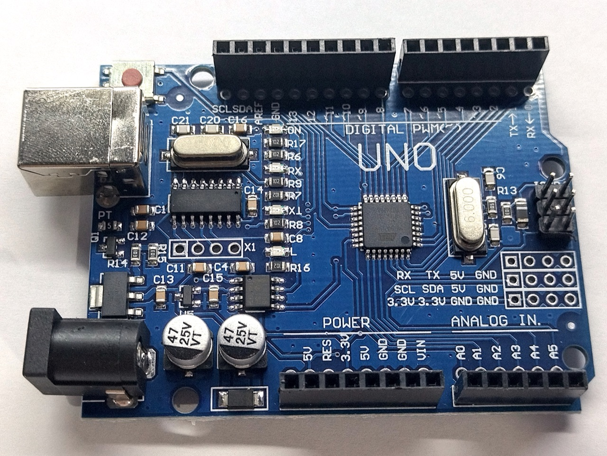
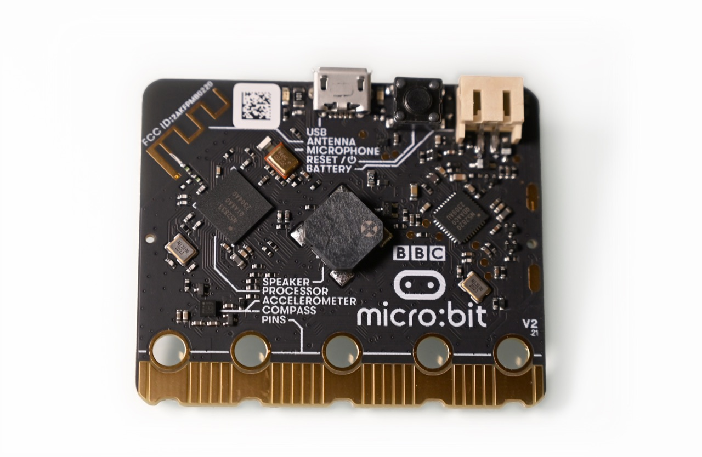
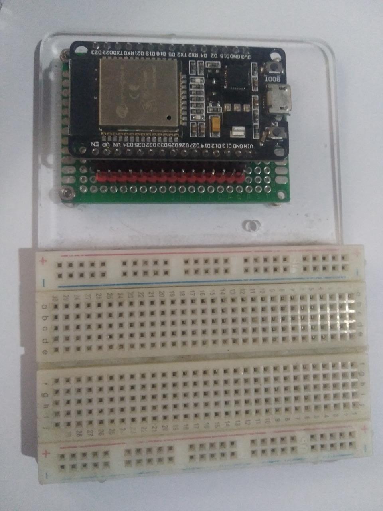
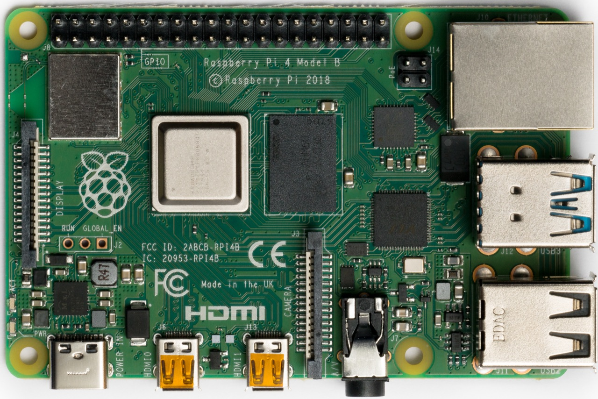

MODULE 5-1・市面上常見控制板
常見控制板
控制板是機電整合作品的「大腦」。它讀取感測器、執行程式、再驅動馬達與燈光。選對大腦,專案就成功了一半。
控制板在做什麼?
一個機電整合系統,通常遵循「感知 → 處理 → 動作」的架構: 感測器負責「感知」環境、控制板負責「處理」(執行程式做判斷)、致動器(馬達、燈)負責「動作」。
控制板的核心是一顆微控制器(Microcontroller)晶片。不同的控制板, 在運算能力、通訊功能(WiFi／藍牙)、腳位數量、價格上各有取捨。
常見控制板圖鑑
入門經典
Arduino Uno
最經典的入門控制板,生態系與教學資源最豐富。沒有內建 WiFi／藍牙,適合學習程式邏輯與基礎電子控制。
教育首選
BBC micro:bit
專為教育設計,板上就內建 LED 點陣、按鈕、加速度計與藍牙。可用積木式或 Python 程式,門檻最低。
IoT 物聯網
ESP32
內建 WiFi 與低功耗藍牙、雙核心 CPU、腳位多,且價格具競爭力。最適合需要連網的物聯網(IoT)專案。
單板電腦
Raspberry Pi
嚴格說是一台會跑作業系統的「單板電腦」,運算力強,適合需要影像辨識、AI 等較重運算的專案。




控制板比較
| 項目 | Arduino Uno | micro:bit | ESP32 |
|---|---|---|---|
| WiFi／藍牙 | 無(需外接) | 藍牙 | WiFi + 藍牙 |
| 內建感測器 | 無 | 多(按鈕/加速度計等) | 觸控感測等 |
| 運算核心 | 單核心 | 單核心 | 雙核心、時脈高 |
| 最適合 | 基礎控制教學 | 初學者、課堂入門 | 物聯網、需連網專案 |
💡 知識小百科
為什麼 ESP32 適合做物聯網?
物聯網(IoT)的精神,是讓裝置能「連上網路、互相溝通」。 ESP32 把 WiFi 與藍牙直接做進晶片裡,可用腳位約 34 個、雙核心 CPU, 內建溫度、觸控等感測器,價格又有競爭力——所以成為 IoT 與創意實作的熱門選擇。 本章後面就會用 ESP32 來實作。
🧠 動動腦:選板挑戰
幫專案挑選合適的控制板
完成下方 3 題情境選擇,即可完成本模組。